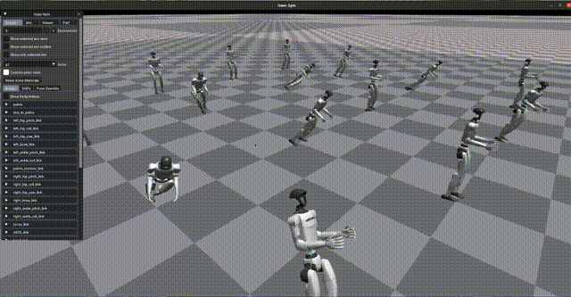
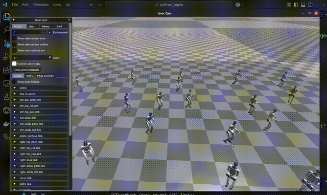
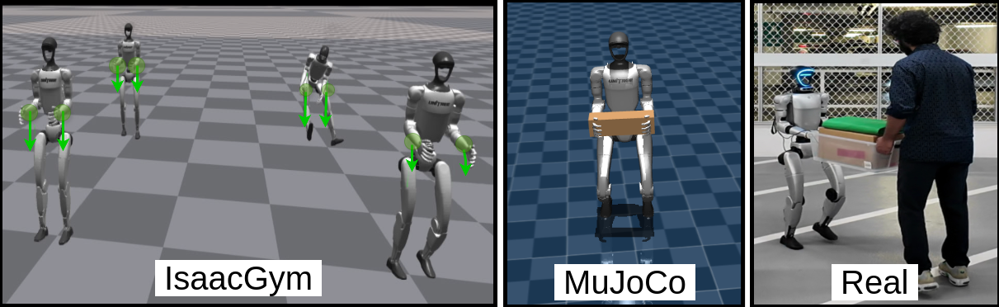

Training RL policy with Load Adaptation
After RL policy with Load Adaptation
Sim to Sim and Sim to Real Transfer

We present a hierarchical policy-learning framework that enables a legged humanoid to cooperatively carry extended loads with a human partner using only haptic cues for intent inference. At the upper tier, a lightweight behavior cloning network consumes six-axis force/torque streams from dual wrist-mounted sensors and outputs whole-body planar velocity commands that capture the leader's applied forces. At the lower tier, a deep-reinforcement-learning policy—trained under randomized payloads (0–3 kg) and friction conditions in Isaac Gym and validated in MuJoCo and on a real Unitree G1—maps these high-level twists to stable, under-load joint trajectories. By decoupling intent interpretation (force → velocity) from legged locomotion (velocity → joints), our method combines intuitive responsiveness to human inputs with robust, load-adaptive walking. We collect training data without motion-capture or markers—only synchronized RGB video and F/T readings—employing SAM2 and WHAM to extract 3D human pose and velocity. In real-world trials, our humanoid achieves cooperative carry-and-move performance (completion time, trajectory deviation, velocity synchrony, and follower force) on par with a blindfolded human-follower baseline. This work is the first to demonstrate learned haptic guidance fused with full-body legged control for fluid human–humanoid co–manipulation.

Data preprocessing with SAM2 and using WHAM for identifying pose and velocity

.png)
Position tracking of the humanoid and human followers relative to the leader in both scenarios, along with the corresponding position error between the leader and each follower. Top: Motion along the x-axis. Bottom: Motion along the y-axis.
.png)
Velocity error tracking between the leader and the corresponding humanoid or human follower in each case. Top: Tracking along the x-axis. Bottom: Tracking along the y-axis.
@article{onsubmission,
author = {},
title = {H2-COMPACT: Human–Humanoid Co-Manipulation via Adaptive Contact Trajectory Policies},
journal = {},
year = {2025},
}